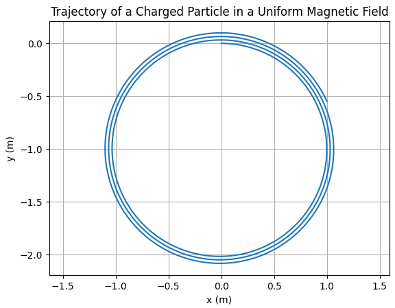

Simulating the Effects of the Lorentz Force
1. Motivation
The Lorentz force governs the motion of charged particles in electric and magnetic fields. It is given by:
\[
\vec{F} = q\vec{E} + q\vec{v} \times \vec{B}
\]
This force plays a key role in systems such as:
- Particle accelerators
- Mass spectrometers
- Plasma confinement devices
- Cyclotrons and magnetic traps
2. Task Summary
We simulate and visualize the trajectory of a charged particle under:
- A uniform magnetic field
- Combined electric and magnetic fields
- Crossed electric and magnetic fields
We explore:
- Effects of varying field strengths (\(\vec{E}\), \(\vec{B}\))
- Initial velocity \(\vec{v}\)
- Charge \(q\) and mass \(m\)

4. Observations
- The particle moves in a circular or helical path in a uniform magnetic field.
- Larmor radius \(r_L = \frac{mv_\perp}{qB}\) depends on the perpendicular component of velocity.
- Adding an electric field causes drift and changes trajectory.
5. Suggestions for Extension
- Vary \(\vec{E}\) and \(\vec{B}\) for non-uniform fields.
- Implement 3D visualization using
matplotliborplotly. - Add Runge-Kutta integration for higher accuracy.
6. Practical Relevance
- In cyclotrons, particles follow spiral paths under Lorentz force.
- In mass spectrometers, charge-to-mass ratio is calculated from curvature.
- In plasma physics, this governs confinement and drift dynamics.